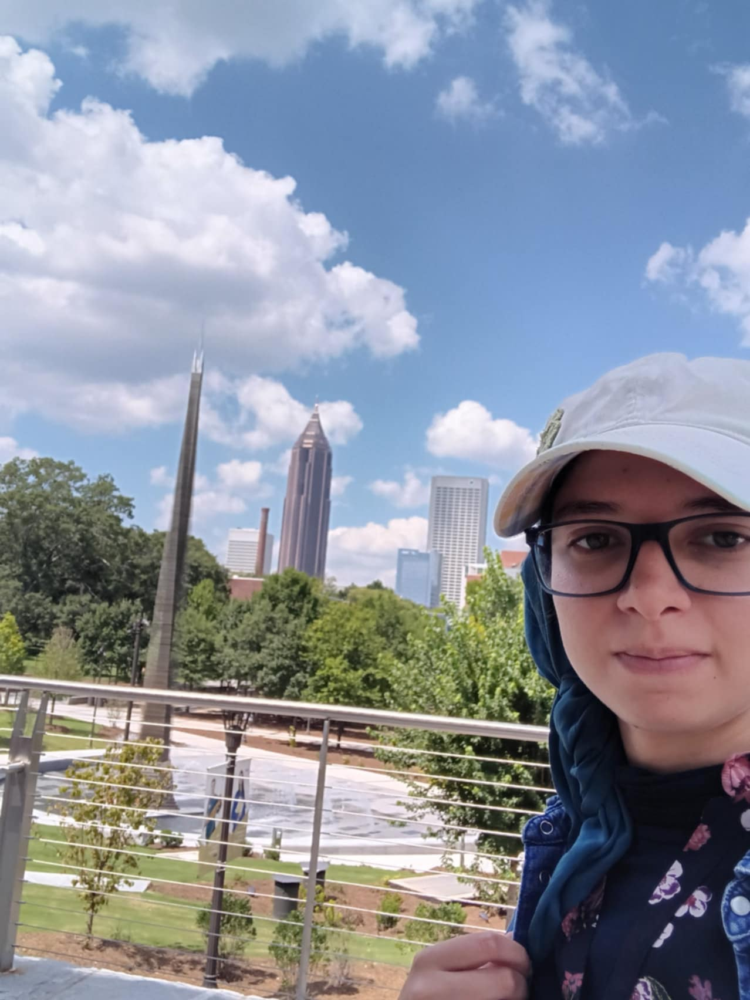

Welcome to my portfolio! I am a Final year student at ISAE majoring in Data Science and in the field of Modeling and Simulation of Complex Systems, also in Master in Operational Research at Univeristy Paul Sabatier Toulouse. I grew to be passionate about science and technology and I thrive to explore ways in which I can contribute to meaningful projects in the future.
The main objective of ADM is to expose students to complex systems design methodologies from both a theoretical and practical perspective. These methodologies have been matured over the last few decades by industry, government and academic sources starting from traditional design paradigms and transforming them into the current state-of-the-art design trends by utilizing revolutionary mathematical approaches and innovative views from various fields and sectors. The course focuses its theoretical content in these revolutionary approaches and their transformation into formalized design methods for complex systems such as aircraft. The theoretical aspect of the course is complimented by a practical class project that allows students to put in practice the advanced design methods learned through a realistic commercial aircraft design study.
In this study, we aim to investigate and predict the total burned area using statistical regression to improve interventional effectiveness. Additionally, this model could help prevent further spread of fires across forests once they start by forecasting the estimated area that could be affected given several input parameters. Our goals are to accurately predict the burned area of the forest in Montesinho natural park on a given day and to determine which of the features are most useful in forming accurate predictions. Our dataset includes 12 predictors: there are 2 qualitative variables that indicate the month and the day of the week in addition to 10 quantitative variables such as the spatial coordinates within the park and the temperature. One constraint is that some predictors, such as spatial coordinates, are specific to Montesinho natural park, so our model may not generalize to other locations.
In this study, we explore a novel approach to gathering a comprehensive set of physiological parameters from individuals through the integration of both thermal and RGB cameras. By leveraging skin temperature as a key input alongside the triad of signals from an RGB camera, we aim to monitor essential metrics such as heartbeat, respiratory rate, and cognitive load. Through signal extraction from these cameras, our research facilitates real-time assessment of the subject’s mental and physiological state, providing valuable insights into their current condition
Description of the project, technologies used, and its purpose.
View on GitHub